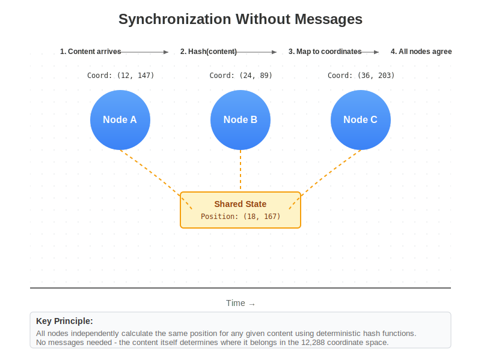

Chapter 8: Synchronization Without Messages
The Communication Paradox
Modern distributed systems are drowning in messages. Every state change triggers cascades of notifications. Every transaction requires multiple rounds of coordination. Every query spawns numerous sub-requests. We’ve built elaborate message-passing infrastructures—message queues, pub/sub systems, event streams, RPC frameworks—all trying to keep distributed state synchronized through communication.
Yet the more we communicate, the more complex synchronization becomes. Messages can be delayed, lost, duplicated, or reordered. Networks partition. Nodes fail mid-conversation. The very mechanism we use for synchronization—messaging—becomes the source of synchronization problems. We’ve created a paradox where the solution is the problem.
Hologram escapes this paradox entirely. Systems synchronize through mathematical properties, not messages. Nodes maintain identical state through calculation, not communication. Consistency emerges from conservation laws, not consensus protocols. This eliminates messages as a synchronization mechanism entirely.

Figure 8.1: Nodes independently calculate the same positions without communication
Mathematical Synchronization
State as Calculation
In Hologram, state is calculated and verified rather than stored and synchronized. Each node independently computes the current state based on mathematical laws. Since the laws are universal and deterministic, all nodes compute the same state without communication.
Consider how we know the position of planets. We don’t have a central database of planetary positions that gets replicated to all observatories. Instead, astronomers calculate positions using orbital mechanics. Every astronomer using the same equations gets the same results. They’re synchronized through mathematics, not messages.
Similarly, Hologram nodes calculate system state using conservation laws. Given the same inputs and laws, they derive the same state. They don’t need to tell each other the state—they all calculate it independently.
This calculation-based state means:
No state replication because state isn’t stored separately at each node. State is derived from mathematical laws whenever needed.
No synchronization delays because nodes don’t wait for state updates. They calculate current state instantly from conservation laws.
No consistency protocols because mathematical laws ensure consistency. Nodes cannot calculate different states from the same laws.
No state conflicts because conflicts would require different mathematics. Since all nodes use the same mathematical laws, conflicts are impossible.
Conservation as Coordination
Conservation laws act as invisible coordinators, ensuring all nodes behave consistently without explicit coordination. When every operation must preserve conservation, nodes naturally stay synchronized because they’re all following the same mathematical constraints.
This is like a marching band staying synchronized without a conductor. If every musician follows the same tempo and rhythm patterns, they stay together naturally. They don’t need to communicate; they need to follow the same rules.
The four conservation laws provide complete coordination:
Data integrity (R) ensures all nodes see the same information values. If nodes calculated different values, conservation would be violated.
Fair access (C) ensures all nodes follow the same access patterns. Nodes can’t access resources out of turn without violating conservation.
State consistency (Φ) ensures all transformations are compatible. Nodes can’t apply incompatible transformations without breaking conservation.
Resource budgets (ℛ) ensure all nodes account for resources identically. Nodes can’t have different resource calculations without violating conservation.
These laws don’t coordinate nodes—they make coordination unnecessary by ensuring only one consistent behavior is possible.
Proof-Based Verification
Instead of exchanging state through messages, nodes exchange proofs of state transitions. These proofs are tiny—just a few numbers—but they completely verify that operations were performed correctly.
When Node A performs an operation:
- It generates a proof that conservation was preserved
- It shares this proof (not the operation details or resulting state)
- Other nodes verify the proof mathematically
- If valid, they know the operation was correct without seeing it
This is like proving you solved a puzzle without showing the solution. The proof demonstrates correctness without revealing details. Nodes stay synchronized not by sharing state but by verifying that all state transitions are valid.
This proof-based synchronization provides:
Minimal bandwidth because proofs are tiny regardless of operation size Complete verification because proofs mathematically demonstrate correctness Privacy preservation because proofs don’t reveal operation details Trust elimination because proofs are mathematically verifiable
Replacing Communication Protocols
The End of Consensus
Distributed consensus protocols—Paxos, Raft, Byzantine Fault Tolerance—exist because nodes need to agree on state. These protocols involve multiple rounds of voting, leader election, and complex failure handling. They add latency, reduce availability, and complicate system design.
Mathematical synchronization eliminates consensus entirely. Nodes don’t need to agree on state because they calculate the same state. There’s no voting because mathematics isn’t democratic. There’s no leader because mathematical laws apply equally everywhere.
Consider how we don’t need consensus on arithmetic. Every calculator computing 2+2 gets 4 without voting, without leaders, without consensus protocols. They’re synchronized through mathematical truth, not agreement.
Similarly, Hologram nodes computing state from conservation laws get identical results without consensus. The mathematics ensures agreement without communication. This eliminates:
Consensus latency because there are no voting rounds Leader bottlenecks because there are no leaders Split-brain scenarios because mathematics doesn’t split Byzantine generals because mathematics doesn’t lie
Message Queues Become Obsolete
Message queues exist to decouple producers and consumers, buffer traffic, and ensure delivery. Systems like Kafka, RabbitMQ, and SQS handle trillions of messages, adding infrastructure complexity and operational overhead.
In Hologram, there are no messages to queue. Operations don’t produce messages—they produce state transitions with proofs. Consumers don’t receive messages—they observe state changes through calculation.
This eliminates:
Queue management because there are no queues Message ordering because state transitions are mathematically ordered Delivery guarantees because there’s nothing to deliver Buffer management because there are no buffers
Instead of queueing messages, the system maintains mathematical invariants that ensure correct state evolution. It’s like replacing a postal system with physics—objects don’t need delivery; they exist where physics places them.
Pub/Sub Without Publishing
Publish-subscribe systems let producers broadcast events to interested consumers. This requires managing topics, subscriptions, and delivery. Every event must be published, routed, and delivered, creating enormous message traffic.
Hologram provides pub/sub semantics without publishing. When state changes, interested parties calculate the change without being notified. They “subscribe” by calculating state for coordinates they care about.
This works because:
State is deterministic so observers can calculate changes Changes are provable so observers can verify transitions Interest is mathematical based on coordinate projection Notification is unnecessary because changes are calculable
This is like subscribing to sunrise times. You don’t need notifications—you calculate when the sun rises based on date and location. Similarly, Hologram subscribers calculate state changes based on coordinates and conservation laws.
Distributed Coordination
Transactions Without Two-Phase Commit
Distributed transactions traditionally require two-phase commit (2PC) protocols. A coordinator asks all participants to prepare, waits for responses, then commits or aborts. This adds latency, creates bottlenecks, and can leave transactions in doubt during failures.
Hologram transactions are atomic through conservation laws, not coordination protocols. A transaction either preserves all conservation laws (and succeeds) or violates some law (and fails). There’s no intermediate state, no preparation phase, no coordinator.
Multi-party transactions work through proof composition:
- Each party performs their part, generating proofs
- Proofs compose into a transaction proof
- The composed proof either validates (transaction succeeds) or not (transaction fails)
- No coordination needed—mathematics ensures atomicity
This provides:
Single-round transactions without preparation phases No coordinators because mathematics coordinates No blocking because there are no locks to hold No doubt because proofs are definitive
Distributed Locks Without Locking
Distributed locks prevent concurrent access to shared resources. They require lock servers, lease management, and complex failure handling. Locks can be lost, leaked, or lead to deadlocks.
Hologram eliminates locks through cycle-based access. The conservation laws ensure each resource is accessed exactly once per cycle phase. This provides mutual exclusion without locks—the mathematics prevents concurrent access.
Resources are “locked” by mathematical scheduling:
- Cycle position determines access rights
- Conservation laws prevent violations
- Access patterns are deterministic
- Conflicts are impossible
This is like how time zones prevent everyone from calling at once. The structure of time naturally distributes access without explicit coordination. Similarly, the cycle structure naturally distributes resource access without locks.
Leader Election Without Elections
Many distributed systems require leaders for coordination, sequencing, or decision-making. Leader election protocols are complex, especially when handling failures, partitions, and Byzantine behavior.
Hologram has no leaders because mathematics needs no leadership. Every node can:
- Calculate state independently
- Verify proofs completely
- Execute operations correctly
- Maintain conservation laws
The system is leaderless because mathematics determines behavior, making leadership unnecessary. It’s like how calculators don’t need a leader calculator to agree on arithmetic.
Network Partition Immunity
Consistency Despite Isolation
Network partitions—where parts of the system cannot communicate—are the bane of distributed systems. According to the CAP theorem, systems must choose between consistency and availability during partitions.
Hologram maintains both consistency and availability during partitions because consistency doesn’t depend on communication. Partitioned nodes continue calculating state from conservation laws. Since the laws are deterministic, partitioned nodes stay consistent despite isolation.
Nodes maintain continuous consistency rather than eventual consistency. They cannot diverge because they follow the same mathematical laws. The partition doesn’t affect the mathematics.
When partitions heal, nodes are already consistent. There’s no reconciliation because there was no divergence. Nodes compare proofs to verify they calculated correctly, but they don’t exchange state because they already have the same state.
Operations During Partitions
Traditional systems must carefully handle operations during partitions to prevent conflicts. They might:
- Refuse operations (losing availability)
- Accept operations (risking conflicts)
- Use conflict-free replicated data types (limiting operations)
Hologram nodes continue normal operations during partitions because operations are safe by construction. Conservation laws prevent conflicts regardless of communication. Nodes can’t perform conflicting operations because conflicts would violate conservation.
This enables:
Full functionality during partitions without restrictions No conflict resolution because conflicts are impossible No special modes because partitions don’t affect operation No data loss because all operations preserve conservation
Automatic Healing
When network partitions heal, traditional systems must reconcile divergent state. This might involve:
- Comparing versions
- Resolving conflicts
- Merging changes
- Potentially losing data
Hologram requires no reconciliation because state never diverges. When partitions heal:
- Nodes exchange proofs of operations during partition
- Proofs are verified mathematically
- Any invalid proofs are rejected
- Valid proofs confirm nodes stayed synchronized
Mathematical verification confirms that no merge is needed. Nodes were synchronized all along through mathematics, not messages.
Performance Implications
Zero Synchronization Overhead
Traditional synchronization adds enormous overhead:
- Message serialization and deserialization
- Network round trips
- Protocol processing
- Queue management
- Lock contention
Mathematical synchronization has zero overhead because there’s nothing to synchronize. Nodes calculate state as needed without communication. The only overhead is the calculation itself, which is typically faster than network communication.
This means:
Linear scalability because nodes don’t communicate to scale Predictable latency because there are no network delays Maximum throughput because there are no synchronization bottlenecks Minimal resource usage because there’s no synchronization infrastructure
Bandwidth Conservation
Current systems consume enormous bandwidth for synchronization. Database replication streams, cache invalidation messages, consensus protocol traffic, heartbeats, health checks—all consuming network capacity for synchronization.
Hologram consumes minimal bandwidth because synchronization happens through calculation, not communication. The only network traffic is proof exchange, and proofs are tiny regardless of operation size.
A traditional system might send megabytes to replicate a large transaction. Hologram sends a few bytes of proof that the transaction preserved conservation. The bandwidth savings are enormous—often 1000x or more.
Latency Elimination
Synchronization latency disappears because there’s no synchronization. Operations complete instantly without waiting for:
- Consensus rounds
- Lock acquisition
- Message delivery
- Replication confirmation
Operations are valid the moment they preserve conservation. There’s no additional synchronization step. This reduces latency from milliseconds (or seconds) to microseconds—the time to calculate conservation.
New Possibilities
Global Instant Consistency
Current systems struggle with global consistency. The more distributed the system, the harder consistency becomes. Global systems often sacrifice consistency for availability, leading to complex application logic to handle inconsistency.
Hologram provides instant global consistency regardless of scale. Whether nodes are in the same rack or opposite sides of the planet, they maintain perfect consistency through mathematics. Distance doesn’t affect mathematical truth.
This enables:
Global transactions that are instantly consistent everywhere Worldwide state that’s identical at all locations Perfect synchronization without time synchronization Conflict-free operation at planetary scale
Trustless Cooperation
Organizations can cooperate without trusting each other because mathematics is trustless. They don’t need to share data or trust reports—they can verify proofs of operations.
This enables:
Supply chain coordination without revealing suppliers Financial settlement without exposing positions Healthcare interoperability without sharing records Competitive cooperation without compromising advantages
Organizations stay synchronized through mathematical proofs, not shared databases or trusted intermediaries.
Infinite Scalability
Since synchronization doesn’t require communication, systems can scale infinitely without synchronization overhead. Adding nodes doesn’t add synchronization traffic. Distance doesn’t affect consistency. Scale doesn’t impact correctness.
This is true infinite scalability—not just handling more load, but maintaining perfect consistency at any scale without synchronization infrastructure. The millionth node is as synchronized as the second, without any additional mechanism.
Looking Forward
Synchronization without messages represents a fundamental breakthrough in distributed systems. By replacing communication with calculation, negotiation with mathematics, and messages with proofs, Hologram eliminates the core complexity of distributed computing.
This represents an entirely different approach rather than an optimization of existing systems. Like replacing mechanical calculators with electronic ones didn’t just make calculation faster but enabled entirely new categories of computation, replacing message-based synchronization with mathematical synchronization doesn’t just improve distributed systems but enables possibilities we’re only beginning to imagine.
In the next chapter, we’ll explore how these concepts combine to create systems with deterministic performance—where every operation has predictable cost, latency is guaranteed, and performance never degrades. We’ll see how mathematical properties provide performance guarantees that are impossible in traditional systems.